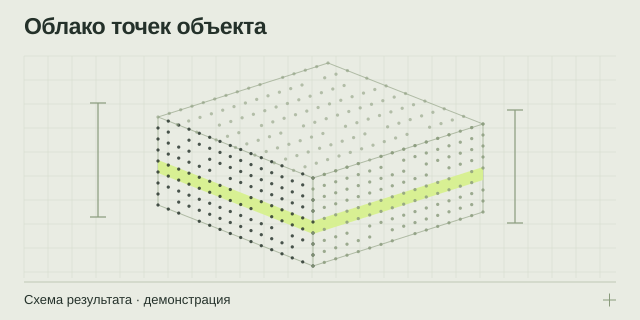

НАПРАВЛЕНИЕ 01 / СОБСТВЕННИКАМ, ПРОЕКТИРОВЩИКАМ И ЭКСПЕРТАМ
3D-сканирование зданий и помещений
Сохраните фактическую геометрию объекта в облаке точек — для обмеров, проектирования, сравнения с проектом и последующего исследования.
Облако точек + сведения о качестве и охвате съёмки
E57 / LAS / LAZ — по заданию

Из задачи — в проверяемый результат
Когда архивные планы устарели или объекта ещё нет в цифровом виде, сначала нужна достоверная измерительная основа. 3D-сканирование помогает зафиксировать доступные поверхности помещений, фасадов и конструкций. По этим данным можно построить чертежи, подготовить модель или проверить отдельные геометрические параметры. Конкретный состав последующих работ выбирается отдельно: облако точек, комплект планов и BIM-модель — разные результаты.
Для какой задачи подходит
Услуга полезна перед реконструкцией здания, перепланировкой помещения, разработкой проектных решений или проверкой геометрии существующих конструкций. Если важно сохранить состояние объекта на определённую дату, в задании фиксируют дату съёмки, доступные зоны и условия измерений.
Начинать следует с вопроса, на который должны ответить данные. Для проектировщика важны исходные размеры и охват, для сравнения с проектом — система координат и контролируемые поверхности, для экспертного исследования — ещё и прослеживаемость исходных материалов.
Что входит в работу
- Постановка задачи. Определяются границы объекта, назначение данных, требования к точности и согласованные форматы.
- Схема съёмки. Учитываются маршруты, позиции, перекрытия, контрольные измерения и ограничения доступа.
- Фиксация на объекте. Собираются измерительные данные в пределах утверждённых зон и условий.
- Обработка и проверка. Данные совмещаются; оцениваются согласованность, охват и участки, требующие пояснений.
- Передача результата. Подготавливается согласованный набор файлов и информация для их дальнейшего использования.
Что вы получаете
- Облако точек в согласованной системе координат и единицах измерения.
- Сведения о съёмке: охваченные зоны, условия, недоступные участки и принятые ограничения.
- Материалы проверки качества в объёме технического задания.
- Пояснения к передаче данных: структура файлов, форматы и условия их открытия.
Планы, фасады, разрезы и информационная модель заказываются как следующий этап или включаются в комплексное предложение. Требование к нативному формату согласуется с учётом используемого программного обеспечения.
Что подготовить для расчёта
Укажите тип объекта, город, примерную площадь и главную цель работ. Полезны имеющиеся планы, фотографии, перечень этажей или помещений и описание доступа. Сообщите о работающем производстве, людях на объекте, высотных участках, закрытых зонах и возможных временных окнах.
Если документации нет, опишите это прямо. Для первой оценки достаточно перечислить известное и отдельно отметить, что потребуется уточнить. До передачи закрытых документов согласуйте с исполнителем безопасный канал обмена.
От чего зависят стоимость и сроки
Расчёт определяется не только площадью. Имеют значение сложность геометрии, число уровней, доступность поверхностей, условия на объекте, требования к контролю, обработке и выдаче. Помещение с оборудованием и открытый зал одинаковой площади могут требовать разного объёма работы.
В предложении следует отдельно зафиксировать полевой этап, обработку, дополнительные чертежи или модель, порядок уточнений и критерии приёмки. Срок подтверждается после оценки этих условий.
Ответы перед заказом
Можно заказать только облако точек?
Да, такой состав можно включить в запрос. Укажите, кто и в каком программном обеспечении будет использовать данные: это помогает согласовать форматы, систему координат и структуру передачи.
Если часть помещений закрыта, можно начать?
Возможность и границы съёмки оцениваются заранее. Недоступные зоны нужно явно отметить в задании и результате; отсутствие данных нельзя заменять предположением о геометрии.
Сканирование уже включает планы?
Не автоматически. Планы и разрезы требуют отдельной обработки и оформления. Если они нужны, добавьте обмерную документацию в состав запроса.
Подготовьте вводные без лишней переписки
Откройте памятку: она помогает описать объект, собрать исходные данные и выбрать нужный результат.
Что подготовить для расчёта ↗ОТ ЗАДАЧИ К СОСТАВУ РАБОТ
Обсудим ваш объект
Подготовьте город, тип и примерную площадь объекта, цель работ и имеющиеся документы. В брифе можно собрать вводные и открыть письмо экспертному партнёру.
Экспертный партнёр — АНО «МСК-Эксперт»: +7 495 648-50-91 · официальный сайт и форма обращения ↗. При нажатии на почтовую ссылку откроется ваша программа: письмо отправляете вы.